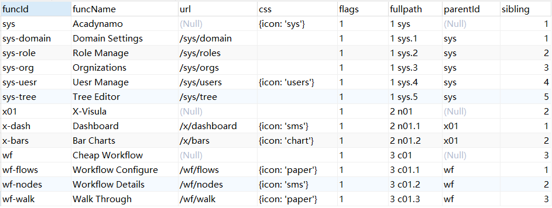
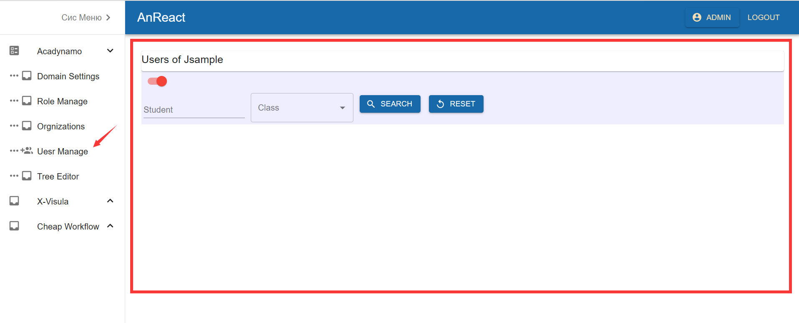

5. 菜单配置
5.1. 菜单表配置
注意
parentId为空的是父节点
根节点的排序根据 sibling
同一个父节点的子节点排序根据 sibling
子节点的fullpath = 父节点的fullpath + 子节点的sibling
5.2. 菜单树配置
在首页 app.tsx 中添加请求菜单的后台Servlet，举例：menu.serv
this.anReact = new AnReactExt(this.anClient, this.errorCtx)
.extendPorts({
menu: "menu.serv",
userstier: "users.tier",
gpatier: "gpa.tier",
mykidstier: "mykids.tier"
});
在后台 dataset.xml 中配置获取菜单树的sk，举例：sys.menu.jsample
<c>
<sk>sys.menu.jsample</sk>
<mysql>SELECT funcId, parentId, funcName, funcUrl url, sibling sort, fullpath, css, flags
FROM a_sys_functions f order by f.fullpath
</mysql>
<sqlit>SELECT funcId, parentId, funcName, url, sibling sort, fullpath, css, flags
FROM a_functions f order by f.fullpath
</sqlit>
<s-tree>,a_sys_functions,funcId id,parentId,funcName text,,,false</s-tree>
</c>
注意
<s-tree>有严格的参数顺序，每个参数之间用英文逗号分割 ,
第一位表示节点是否被选中
第二位是表名
第三位是主键的字段名
第四位是父级主键的字段名
第五位是fullpath
第六位是sort
第七位是节点名称
5.3. 菜单关联组件
在首页 app.tsx 中添加菜单与组件的对应关系，举例：
SysComp.extendLinks([
{path: '/sys/domain', comp: Domain},
{path: '/sys/roles', comp: Roles},
{path: '/sys/orgs', comp: Orgs},
{path: '/sys/users', comp: jsample.Userst},
{path: '/tier/users', comp: jsample.Userst},
]);
注意
注意此处的 path 就是菜单表配置的 url，comp 就是
点击菜单后，首页的右边区域就会根据菜单的 url，找到对应的组件并生成它：
5.4. 菜单路由
新的框架没有用 react-router，用的自定义路由匹配，当找到与url完全匹配的组件，就渲染它：
route() {
const TagName = _comps[this.state.currentPage?.url || '/home'];
if (TagName)
return (
<TagName
uri={this.state.currentPage?.url || '/'}
{...this.state.currentPage.props}
ssInf={(this.context as AnContextType).anClient?.ssInf}
/>);
else return <Home />;
}
提示
效果和 react 精准匹配路由是一样，且当前 uri 和其它属性一并传给了该组件